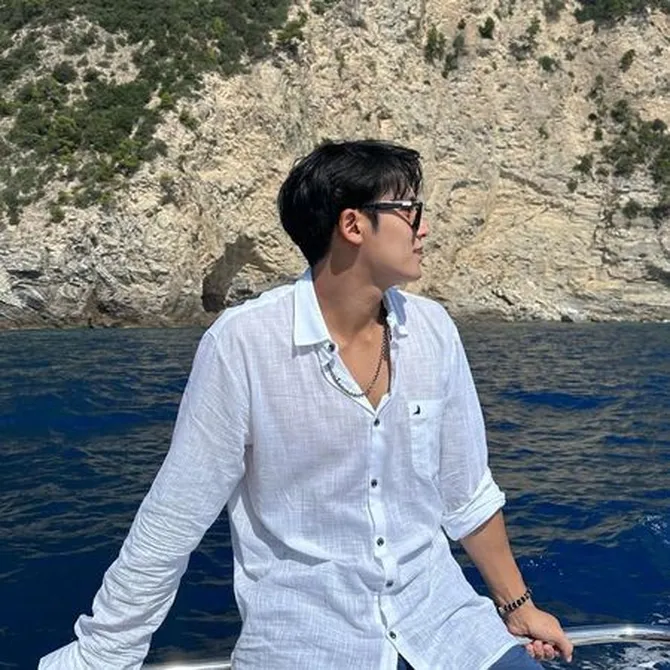

Home | Contact | About | Download

| Biodata Mingyu | ||
|---|---|---|
| Nama | Kim Mingyu | |
| Tanggal Lahir | 6 April 1997 | |
| Profesi |
|
|
Ini adalah About Mingyu. Coba klik link ini: Meluncur ke Penutup maka kamu akan dibawa ke bagian penutup dari dokumen ini.
Mingyu adalah seorang rapper Korea Selatan di bawah kontrak Pledis Entertainment. Ia adalah anggota grup vokal laki-laki SEVENTEEN dan masuk dalam sub unit Hip-Hop. Wikipedia Kelahiran: 6 April 1997 (usia 28 tahun), Dongan-gu, Anyang, Korea Selatan Grup musik: Seventeen (sejak 2015) Pendidikan: Seoul Broadcasting High School (2016) · Lihat lainnya Saudara kandung: Kim Min-seo Tinggi: 1,87 m
Kim Mingyu, yang merupakan rapper utama sekaligus visual dari SEVENTEEN, lahir di Anyang, Gyeonggi-do, Korea Selatan pada 6 April 1997. Mingyu direkrut oleh Pledis Entertainment saat masih kelas dua SMP. Kim Mingyu menjalani masa trainee selama 4 tahun. Selain menjadi visual, Mingyu juga adalah anggota tertinggi di SEVENTEN.Kim Mingyu menjalani masa trainee selama 4 tahun. Selain menjadi visual, Mingyu juga adalah anggota tertinggi di SEVENTEEN. Meskipun memiliki jadwal yang padat, Mingyu memiliki beberapa hobi yang biasa ia lakukan di waktu luangnya, seperti sepak bola, basket, dan membuat action figure. Tidak hanya sekadar hobi, Kim Mingyu bersama timnya pernah menduduki peringkat dua nasional. Ia telah menekuni olahraga ini sejak masih sekolah dasar. Selain jago olahraga, Mingyu juga mahir bermain musik, salah satunya adalah bass.
Sebelum terkenal, Kim Mingyu pernah merasakan bekerja paruh waktu. Dikutip dari laman kprofiles.com, ia pernah bekerja part-time sebagai barista di satu kedai kopi. Kim Mingyu masuk ke dalam daftar wajah terganteng selama dua tahun berturut-turut. Pada tahun 2017, ia menduduki peringkat ke-49 dalam daftar The Most Handsome Faces oleh TC Candler. Pada tahun berikutnya, ia naik ke peringkat 32 dalam kategori yang sama.
Sejak kecil, Mingyu dikenal sebagai anak yang multitalenta, terlibat dalam berbagai aktivitas di sekolahnya, salah satunya adalah bermain sepak bola. Bahkan, ketika di SD dan SMP, Mingyu berhasil meraih juara 2 dalam turnamen sepak bola nasional. Selain itu, Mingyu juga pernah mencetak gol saat mengikuti kejuaraan Idol Star Athletics Championship (ISAC) pada tahun 2015. Penyanyi "Bittersweet" ini juga memiliki hobi bermain basket dan mengoleksi action figure.
Sebelum berkarier bersama Seventeen, Mingyu pernah tergabung dalam sebuah band di SMP sebagai pemain bass. Aktivitas ini diselingi dengan bekerja paruh waktu sebagai barista di sebuah kedai kopi di Korea.
Ini adalah penutup tapi bukan penutup segalanya.Saya akan ke website ini,untuk mingyuu